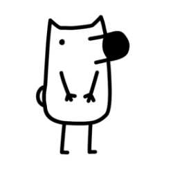

名字:
钟敏瑶
性别:男

介绍:已全部取关并退知乎，拒做僵尸粉。微信:miss1997211
问题
答案
新建于:2015-12-14 10:03:25 PM，更新于2015-12-14 10:05:12 PM
正文: 心中想着你爱的人也爱你，想着你和ta周游世界，享受柴米油盐酱醋茶。你会浅浅笑的很美的！
如果你在给别人拍照，拍的时候先说“瘸子~~”，这个时候别拍，他们听到瘸子时会笑的。。。笑了再拍，哈哈哈